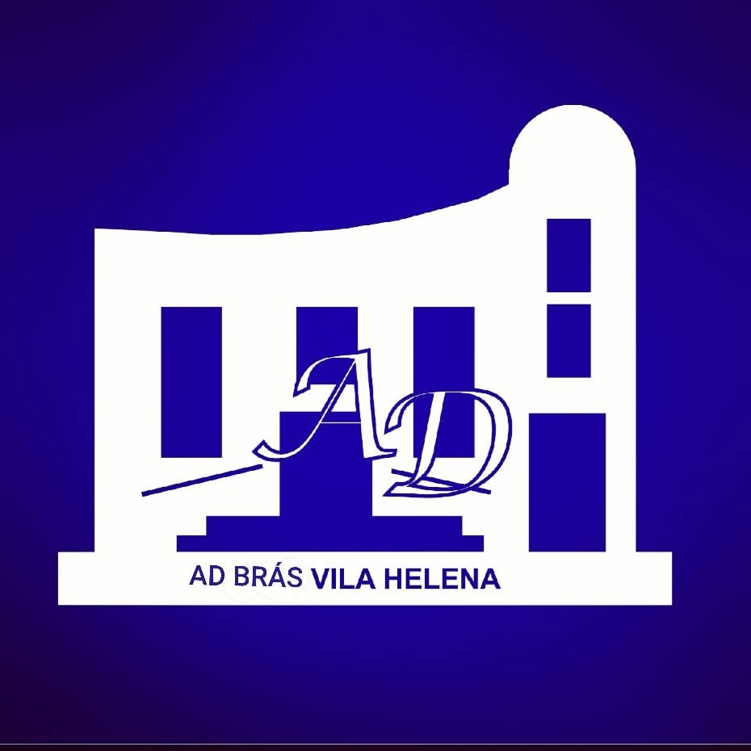
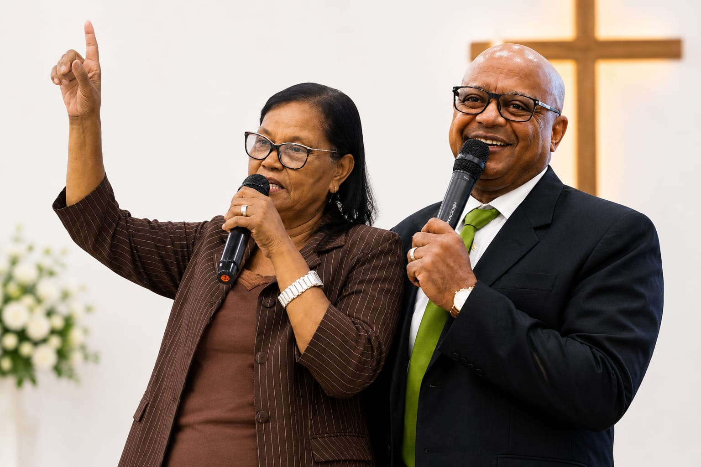

Culto
19h30 às 21h10
Um tempo de adoração e comunhão durante a semana.

AD Brás Vila HelenaUma igreja de portas abertas para receber você e sua família. Venha compartilhar momentos de fé, comunhão e aprendizado.

A AD Brás Vila Helena é uma comunidade cristã que deseja acolher você.
Nos reunimos para adorar a Deus, aprender a Palavra e fortalecer os laços de comunhão. Será uma alegria receber você em uma de nossas reuniões.
Encontre um horário para nos visitar →Reserve um momento da sua semana para estar conosco. Você e sua família são bem-vindos!
19h30 às 21h10
Um tempo de adoração e comunhão durante a semana.
09h às 10h30
Aprendizado e estudo da Palavra de Deus.
18h às 20h10
Um encontro para celebrar a fé em comunidade.
Os horários podem estar sujeitos a alterações. Para confirmações, consulte os canais oficiais da igreja.
Conheça os pastores que, com dedicação e fé, conduzem nossa comunidade na caminhada cristã.
Pastores Locais

Pastores Presidentes do Campo de Sorocaba
Será uma alegria receber você e sua família em um de nossos encontros.
Oh! Quão bom e quão suave é que os irmãos vivam em união!
SALMOS 133:1
Cada encontro é uma oportunidade de fortalecer nossa fé, compartilhar experiências e viver momentos especiais em comunhão.
Está pensando em nos visitar? Confira algumas informações sobre nossa igreja.
Não! Nossa igreja está de portas abertas para receber você e sua família. Todos são bem-vindos.
Quarta-feira: 19h30 às 21h10.
Domingo: 18h às 20h10.
Escola Bíblica: domingo, das 9h às 10h30.
Estamos na Rua Augusta Frederico de Oliveira, 162, Vila Helena, Sorocaba.
Acompanhe nossa igreja pelo Instagram @adbrasvilahelena.